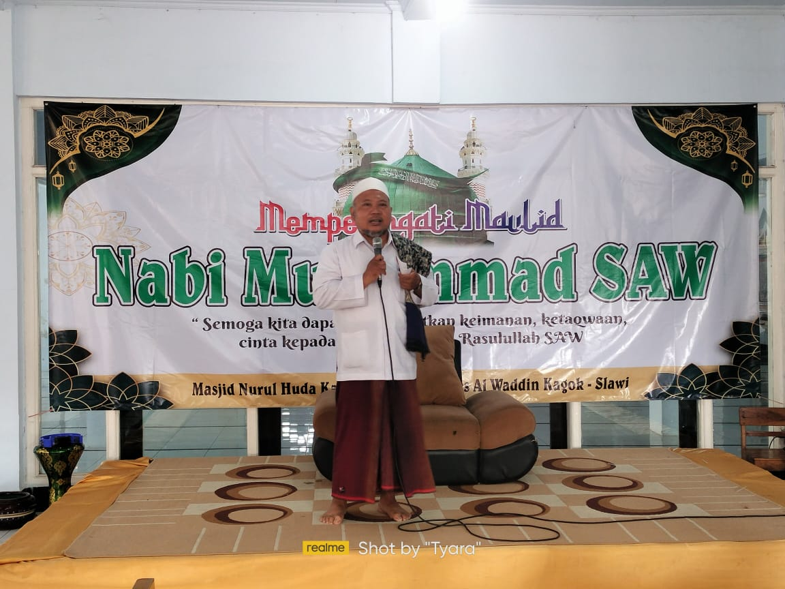
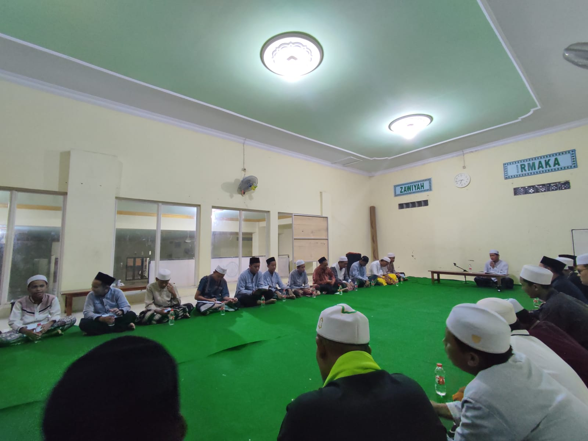
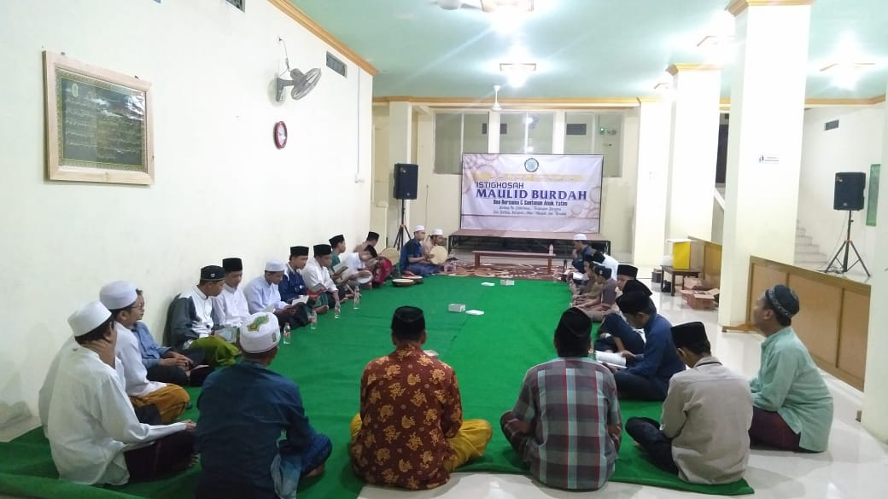
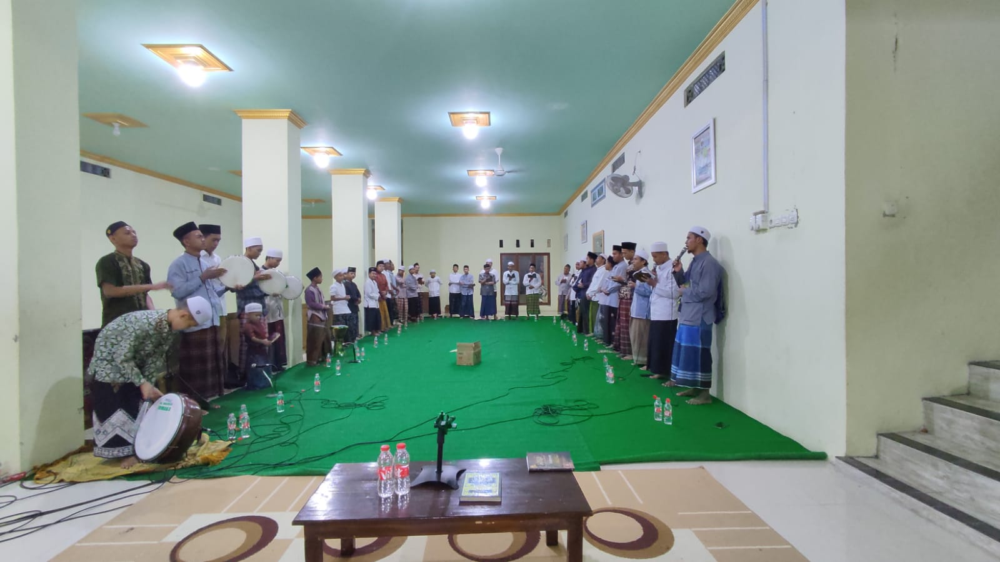
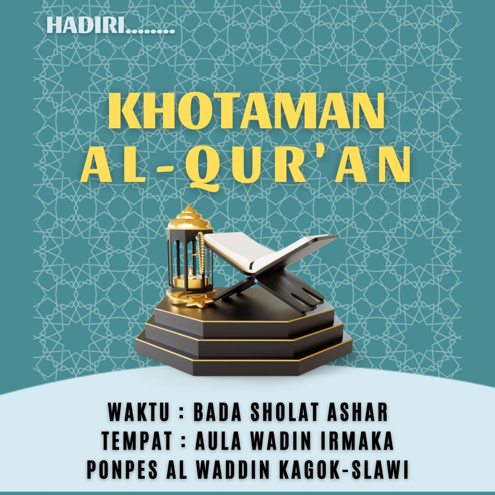
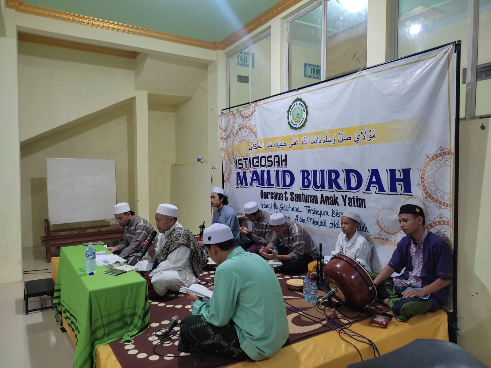
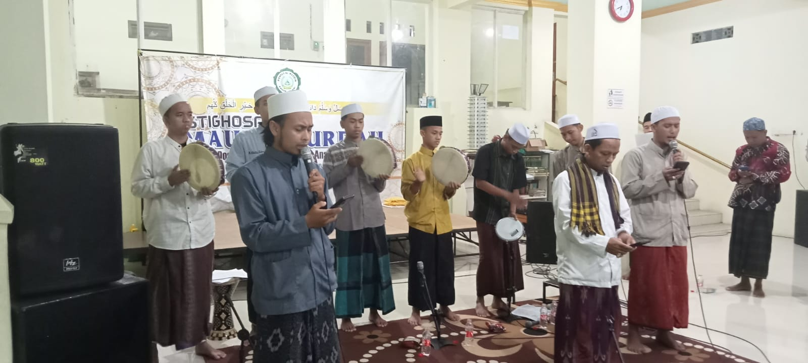
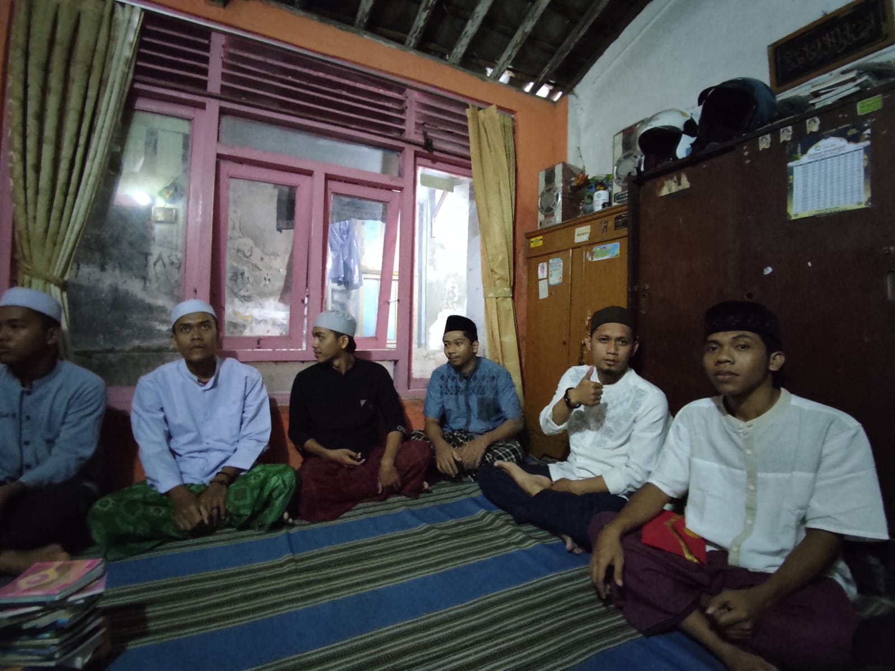
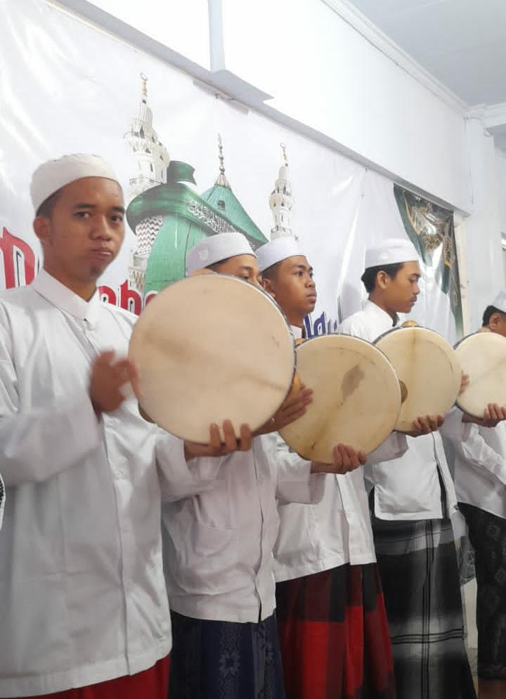

Pondok Pesantren AL WADDIN berada di kelurahan kagok tepatnya di
samping masjid Nurul Huda Kagok.
Podok pesantren ini berfokus pada Tafidz Quran nya sehingga
menciptakan generasi muda yang hafal AL QURAN.
Profil Ponpes Al Waddin

pondok pesantren ini di asuh oleh KH Muhammad Solikhun,sepperti yang
anda lihat pada gambar di atas,beliau adalah sosok yang mengasuh
pondok pesantren ini
bisa dibilang pondok pesantren ini baru diresmikan tahun 2019,tetapi
sebenarnya sebelum adanya nama pondok pesantren ini kami para
(IRMAKA) remaja masjid kagok
sudah menempati tempat tersebut untuk mengaji,menimba ilmu agama.
ZAWIYAH IRMAKA

Zawiyah Irmaka,seprti yang kita sudah tau apa itu irmaka sekarang
kita berada di bagian belakang pondok terdapat zawiyah sebenarnya
bukan dibelakan tetapi kalau dilihat dari gerbsng zawiyah terdapat
dibelakang tetapi dizawiyah terdapat pintu yang menghubungkan di
depan masjid jadi bisa dibilang halaman depan juga.
AULA IRMAKA


Seperti yang kita lihat aula waddin digunakan untuk semua acara umum
seperti pengajian,maulid,burdah,dll. mmungkin tidak usah saya
jelaskan lebih detailnya karna yang namanya aula sudah pasti untuk
sebuah perkumpulan.
Program Belajar
Tafidz AL QURAN

Program belajar di pondok ini yang di unggulkan adalah tafidz quran
nya tetapi jgn salah menilaai pondok pesantren ini juga dibekali
dengan pemahaman agama yg luas dengan didampingi oleh 2 ustadz dari
pondok pesantren darusalam jatibarang dan yang mengajar/mendampingi
hafalan al quran adalah ust yassid yang mengajar ilmu agama ust
misbah dan asep dibantu dengan ust alwi dkk.
Dokumentasi
Berikut kami tampampilkan beberapa dokumentasi yang sekiranya
menambah imajinasi yang belum tau ponpes ini
Pengajian Burdah

pertama adalah pembacaan burdah kami berikan sedikit kisah
mengenai burdah ini sekilas saja untuk yg belum faham, jadi..,awal
muda terciptanya burdah ini Imam Busyiri menulis syair budrah atas
perintah Rasulullah yang datang ke mimpinya. Saat itu ia tengah
menderita penyakit faalij atau setengah lumpuh. Beliau mengarang
syair burdah 160 bait dan dibagi menjadi 10 pasal. Empat bait
pertama dan satu tambahan syair lainnya sering diamalkan dan
disyairkan oleh para pecinta sholawat. Usai menyusun tersebut,
Imam Busyiri kembali bermimpi bertemu dengan Rasulullah. Dalam
mimpi kedua itu, Rasulullah menyelimutinya dengan burdah (mantel).
Ketika bangun, sembuhlah beliau dari sakit lumpuh yang
dideritanya.
Pembacaan Maulid Nabi

Kedua familiar bagi kita mungkin sebagian kita ada yang membacanya
1 bulan sekali atau 1 minggu sekali, tapi di pondok ini membaca
burdah 2 minggu sekali untuk menambah kecintaan kite kepada NABI
MUHAMMAD SAW, dan yang kita rutinkan pembacaan maulid ad'diba yang
juga di baca di ponpes darusalam jatibarang brebes
Yassin Fadillah

ketiga yaitu pembacaan yasin Fadillah mungkin terasa asing bagi
yang baru mendengar,tetapi sebenarnya sama saja isinya tapi ada
sedikit perubahan atau tambahan di dalamnya tetapi ini bukan
menyimpang ya atau menambahkan surat yassin itu sendiri ini ada
riwayatnya boleh di cek sendiri
Hadroh

ke empat ada tim hadroh nih...ganteng" hehe,sudah tidak asing jg
kan dengan hadroh berikut kami berikan sejarah hadroh ini Hadroh
adalah salah satu seni musik tradisional Islam yang erat
hubungannya dengan acara perayaan agama seperti pengajian, aqiqah,
khitanan, hingga acara pernikahan. Hadroh hadir sebagai penguat
semangat dalam peribadatan dan mengajarkan tentang kesederhanaan.
Hadroh berasal dari kata “hudur” yang dalam bahasa Arab berarti
“penampilan”. Seni musik Hadroh memiliki pengaruh yang kuat dari
musik tradisional Arab dan Islam. Instrumen musik yang digunakan
dalam Hadroh adalah instrumen musik tradisional seperti rebana,
tamborin, marawis dan kecapi.